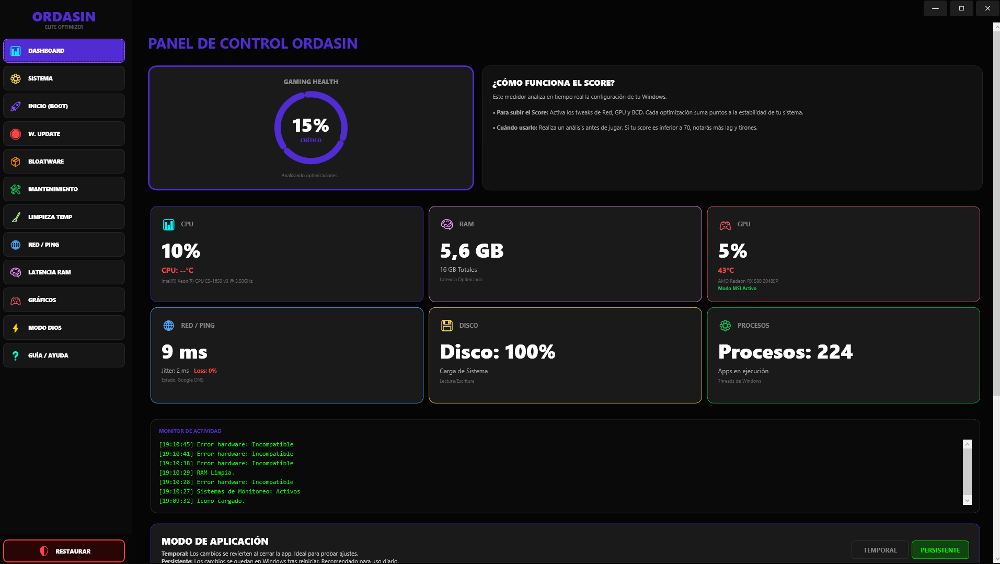
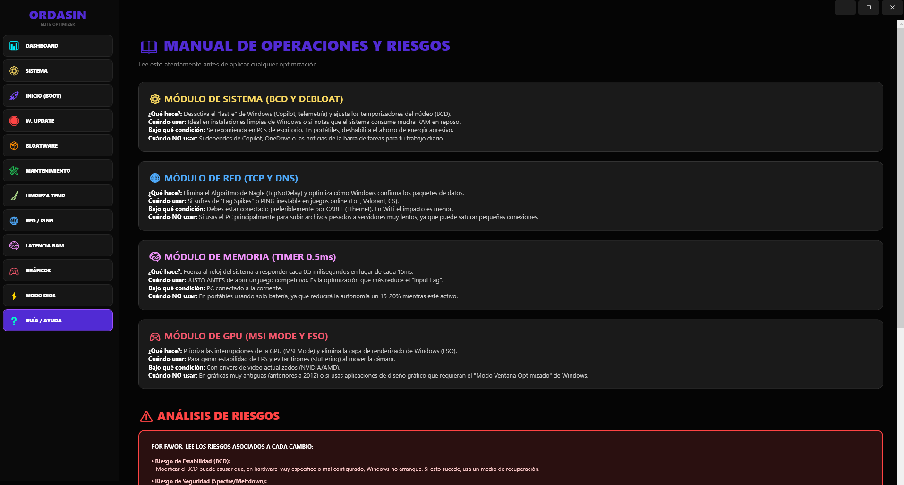

La herramienta definitiva de optimización para Windows 10 y 11.
Obtener en Microsoft Store (Próximamente) Unirse al DiscordAjustes profundos de BCD y priorización de procesos para eliminar el stuttering y subir los cuadros por segundo.
Optimización de temporizadores de sistema y respuesta del ratón. Siente la diferencia en juegos competitivos.
Elimina gigabytes de archivos basura, caché de shaders y telemetría innecesaria de Windows.


Optimizado para los títulos más exigentes
Completamente. La herramienta solo utiliza comandos nativos de Windows y ajustes del registro documentados por Microsoft. No instala software de terceros ni servicios ocultos.
No. Ordasin Optimizer no modifica los archivos de los juegos ni inyecta código en ellos. Solo optimiza el sistema operativo para que el hardware responda más rápido. Es 100% compatible con Easy Anti-Cheat, BattlEye y Ricochet.
La aplicación incluye un sistema de "Restauración". Si no estás satisfecho con los cambios, puedes volver al estado original con un solo clic desde la pestaña de restauración.
Sí, está totalmente optimizado tanto para Windows 10 como para la arquitectura de Windows 11, incluyendo mejoras específicas para procesadores modernos.
Compromiso Ordasin: Tu privacidad es nuestra prioridad número uno. Ordasin Optimizer ha sido diseñado bajo el principio de "Zero Data Collection".
Esta aplicación NO recopila, NO almacena y NO transmite ningún dato personal, estadístico o de uso. No utilizamos cookies, ni rastreadores, ni telemetría de terceros.
Todas las optimizaciones se realizan mediante comandos estándar de Windows y modificaciones en el registro local. El usuario tiene control total sobre qué aplicar y qué revertir.
Los archivos de configuración se guardan exclusivamente en el directorio %LOCALAPPDATA% del usuario. Estos archivos son locales y privados.
Para cualquier duda legal o técnica, puedes contactarnos en manolitogtf@gmail.com o a través de nuestro servidor de Discord de la comunidad Ordasin.
Bienvenido a Ordasin Optimizer. Al utilizar esta aplicación, aceptas los siguientes términos:
Ordasin Optimizer se proporciona "tal cual" para optimizar el rendimiento de tu sistema operativo. No ofrecemos garantías sobre resultados específicos, ya que el rendimiento varía según el hardware y la configuración del usuario.
La aplicación realiza cambios en el registro de Windows y la configuración del sistema. Es responsabilidad del usuario asegurarse de tener copias de seguridad y comprender los riesgos asociados. Ordasin no se hace responsable de problemas de estabilidad o arranque del sistema derivados de un uso incorrecto.
Ordasin Optimizer no garantiza la compatibilidad con todos los sistemas o juegos. Úsalo bajo tu propia responsabilidad.
Todo el código y diseño de Ordasin Optimizer es propiedad de Ordasin. No se permite la ingeniería inversa ni la redistribución sin permiso explícito.
Ordasin no será responsable de ninguna pérdida de datos, corrupción de sistema o problemas de rendimiento que puedan surgir del uso de esta aplicación.
Ordasin Optimizer utiliza códigos de retorno estándar de Windows para indicar el resultado de las operaciones. Estos son los significados más comunes:
| Código | Significado |
|---|---|
0 | Instalación o operación completada con éxito. |
3010 | Operación completada con éxito, pero se requiere un reinicio del sistema. |
1602 | Operación cancelada por el usuario. |
1618 | Ya hay otra instalación en curso. |
112 | Error: El disco está lleno. |
1 | Error general o desconocido. |
Estos códigos son utilizados por el sistema de certificación de la Microsoft Store.
Descarga las versiones oficiales de Ordasin Optimizer.
Nota: Al descargar, aceptas nuestros términos de servicio.
Únete a nuestra comunidad para soporte en tiempo real y actualizaciones.
Unirse al Discord Oficial